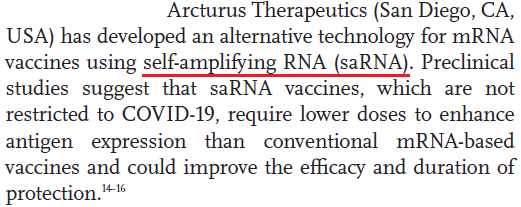

※管理者は新型コロナワクチンの有効性・安全性に対して懐疑的です。しかし、害を過大評価することの問題点を提起したく、記事を書きました。
2021年前半に新型コロナワクチンの接種が全国で開始された当時、政府や専門家、メディアは新型コロナワクチンの安全性と有効性にお墨付きを与えていました。
一方、使用経験が乏しいmRNA技術を用いたワクチンであることから、疑問を呈する声がありましたが、科学的に正しくない言説として扱われました。
その後新型コロナウイルス感染症の流行が収束することはなく、変異ウイルスに対するワクチンが開発されて5回目、6回目と接種が続く中で、ワクチンの有用性を疑問視する声が増加しました。結局、人類はコロナとともに生きるしかないと2023年5月に5類感染症相当の扱いに引き下げられ、うやむやになる形で幕引きが図られたのでした。
もちろん、新型コロナワクチンに疑問を呈する言説の中には不正確な情報も多数ありましたが、ある意味で新型コロナワクチン懐疑派が正しかったように感じた人も多かったと思います。
その中で1年ほど前から、新型コロナワクチン懐疑派の一部から異口同音に主張されるようになった、レプリコンワクチン危険論について検証したいと思います。
アークトゥルス・セラピューティクスが開発し、明治製菓ファルマが販売する予定の「コスタイベ」。従来の新型コロナワクチンはウイルス成分の設計図であるmRNAを注射することで、体内でウイルス成分を作らせ、免疫ができるという仕組みである。一方、レプリコンワクチンであるコスタイベでは、RNAからRNAを複製する働きを持つアルファウイルスの遺伝子が組み込まれており、RNAが自己複製されることで、少量のRNAでもより大量のウイルス成分を作らせることができ、免疫が持続しやすいという特徴がある。
≪従来の新型コロナワクチンでは、体内で作られたウイルス成分が体外に出て、周囲の人に健康被害を及ぼす可能性はあるが、ウイルス成分が消費されれば改善する。しかし、レプリコンワクチンでは体内でRNAが多量に複製されるため、そのRNAが体外に出て他人の体内に移行すれば、その人の体内で更にRNAが複製され、健康被害が重症化・長期化するのではないか≫、という主張。
しかし、これらの情報はセンセーショナルにイラスト付きで伝えられる一方で、論文などの参考文献に基づいた議論を見かけないのが不思議でした。
コスタイベは「ARCT-154」という名前で治験が行われているようで、以下に従来の新型コロナワクチンと副作用や免疫原性を比較した論文が掲載されています。
Immunogenicity and safety of a booster dose of a self-amplifying RNA COVID-19 vaccine (ARCT-154) versus BNT162b2 mRNA COVID-19 vaccine: a double-blind, multicentre, randomised, controlled, phase 3, non-inferiority trial
Introductionの中に以下のような記述があります。
アークトゥルス・セラピューティクスが開発したワクチンはself-amplifying RNAを使用しているとのことです。「自己増幅RNA」と訳せますが、どういったものなのか参考文献を見てみます。
Self-amplifying RNA vaccines for infectious diseases
この中のFigure 1にself-amplifying RNAの説明が載っています。
これを見ると、
なぜこういった基本的な部分を無視して情報拡散が行われているのか不思議です。レプリコンワクチン反対派からは、「アリの巣コロリ」とか、「ゾンビ化ワクチン」といった発言が見られますが、このまま行くと彼らの予言はことごとく外れ、「やっぱり反ワクは嘘つきだ」というレッテルを貼られて終わることが予測されます。